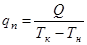
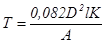

СТРОИТЕЛЬНЫЕ НОРМЫ И ПРАВИЛА
НАРУЖНЫЕ СЕТИ И СООРУЖЕНИЯ
ВОДОСНАБЖЕНИЯ И КАНАЛИЗАЦИИ
СНиП 3.05.04-85*
ГОСУДАРСТВЕННЫЙ СТРОИТЕЛЬНЫЙ КОМИТЕТ СССР
Москва 1990
РАЗРАБОТАНЫ
ВНИИ ВОДГЕО Госстроя СССР (канд. техн. наук В.И. Готовцев - руководитель
темы, В.К. Андриади), с участием Союзводоканалпроекта Госстроя СССР (П.Г.
Васильев и А.С. Игнатович), Донецкого Промстройниипроекта Госстроя
СССР (С.А. Светницкий), НИИОСП им. Гресеванова Госстроя СССР (канд.
техн. наук В. Г. Галицкий и Д.И. Федорович), Гипроречтранса
Минречфлота РСФСР (М.Н. Доманевский), НИИ коммунального
водоснабжения и очистки воды АКХ им. К.Д. Памфилова Минжилкомхоза РСФСР (д-р
техн. наук Н.А. Лукиных, канд. техн. наук В.П. Криштул),
института Тульский Промстройпроект Минтяжстроя СССР.
ВНЕСЕНЫ ВНИИ
ВОДГЕО Госстроя СССР.
ПОДГОТОВЛЕНЫ
К УТВЕРЖДЕНИЮ Главтехнормированием Госстроя СССР (Н. А. Шишов).
СНиП 3.05.04-85* является переизданием СНиП 3.05.04-85
с изменением № 1,
утвержденным постановлением Госстроя СССР от 25 мая 1990 г. № 51.
Изменение
разработано ВНИИ ВОДГЕО Госстроя СССР и ЦНИИЭП инженерного оборудования
Госкомархитектуры.
Разделы,
пункты, таблицы, в которые внесены изменения, отмечены звездочкой.
Согласовано
с Главным санитарно-эпидемиологическим управлением Минздрава СССР письмом от 10
ноября 1984 г. № 121212/1600-14.
При пользовании нормативным документом следует
учитывать утвержденные изменения строительных норм и правил и государственных
стандартов, публикуемые в журнале «Бюллетень строительной техники» Госстроя
СССР и информационном указателе «Государственные стандарты СССР» Госстандарта.
|
Государственный
строительный
комитет СССР
(Госстрой СССР)
|
Строительные
нормы и правила
|
СНиП 3.05.04-85*
|
|
Наружные сети и
сооружения
водоснабжения и канализации
|
Взамен СНиП
III-30-74
в части требований по производству и приемке работ
по строительству и реконструкции наружных сетей и
сооружений водоснабжения и канализации
|
* Настоящие
правила распространяются на строительство новых, расширение и реконструкцию
действующих наружных сетей1 и сооружений водоснабжения и канализации
населенных пунктов народного хозяйства.
_________
* Переиздание с изменениями на 1
июля 1990 г.
1 Наружных сетей - в
последующем тексте «трубопроводов».
1.1.
При строительстве новых, расширении и реконструкции действующих трубопроводов и
сооружений водоснабжения и канализации кроме требований проектов (рабочих
проектов)1 и настоящих правил должны соблюдаться также требования СНиП
3.01.01-85*, СНиП 3.01.03-84, СНиП
III-4-80* и других норм и правил, стандартов и ведомственных нормативных
документов, утвержденных в соответствии со СНиП
1.01.01-83.
_________
1 Проектов (рабочих
проектов) - в последующем тексте «проектов».
1.2.
Законченные строительством трубопроводы и сооружения водоснабжения и
канализации следует принимать в эксплуатацию в соответствии с требованиями СНиП
3.01.04-87.
|
Внесены
ВНИИ ВОДГЕО
Госстроя СССР
|
Утверждены
постановлением
Госстроя СССР
от 31 мая 1985 г. № 73
|
Срок
введения
в действие
1 июля 1986 г.
|
2.1.
Земляные работы и работы по устройству оснований при строительстве трубопроводов и
сооружений водоснабжения и канализации должны выполняться в соответствии с
требованиями СНиП 3.02.01-87.
3.1.
При перемещении труб и собранных секций, имеющих антикоррозионные покрытия,
следует применять мягкие клещевые захваты,
гибкие полотенца и другие средства, исключающие повреждение этих покрытий.
3.2.
При раскладке труб, предназначенных для хозяйственно-питьевого водоснабжения, не следует допускать попадания в них
поверхностных или сточных вод. Трубы и фасонные
части, арматура и готовые узлы перед монтажом должны быть осмотрены и очищены
изнутри и снаружи от грязи, снега, льда, масел и посторонних предметов.
3.3.
Монтаж трубопроводов должен производиться в соответствии с проектом
производства работ и технологическими картами после проверки соответствия проекту
размеров траншеи, крепления стенок, отметок дна и при надземной прокладке -
опорных конструкций. Результаты проверки должны быть отражены в журнале
производства работ.
3.4.
Трубы раструбного типа безнапорных трубопроводов следует, как правило, укладывать раструбом вверх по уклону.
3.5.
Предусмотренную проектом прямолинейность участков безнапорных трубопроводов
между смежными колодцами следует контролировать просмотром «на свет» с помощью
зеркала до и после засыпки траншеи. При
просмотре трубопровода круглого сечения видимый в зеркале круг должен иметь
правильную форму.
Допустимая
величина отклонения от формы круга по горизонтали должна составлять не более
1/4 диаметра трубопровода, но не более 50 мм в каждую сторону. Отклонения от
правильной формы круга по вертикали не допускаются.
3.6.
Максимальные отклонения от проектного положения осей напорных трубопроводов не
должны превышать ±100 мм в плане, отметок лотков безнапорных
трубопроводов - ±5 мм, а отметок верха
напорных трубопроводов - ±30 мм, если другие
нормы не обоснованы проектом.
3.7.
Прокладка напорных трубопроводов по пологой кривой без применения фасонных
частей допускается для раструбных труб со стыковыми соединениями на резиновых
уплотнителях с углом поворота в каждом стыке не более чем на 2° для труб
условным диаметром до 600 мм и не более чем на 1° для труб условным диаметром
свыше 600 мм.
3.8.
При монтаже трубопроводов водоснабжения и канализации в горных условиях кроме
требований настоящих правил следует соблюдать также требования разд. 9 СНиП
III-42-80.
3.9.
При прокладке трубопроводов на прямолинейном участке трассы соединяемые концы
смежных труб должны быть отцентрированы так, чтобы ширина раструбной щели была
одинаковой по всей окружности.
3.10.
Концы труб, а также отверстия во фланцах запорной и другой арматуры при
перерывах в укладке следует закрывать
заглушками или деревянными пробками.
3.11.
Резиновые уплотнители для монтажа трубопроводов в условиях низких температур
наружного воздуха не допускается применять в промороженном состоянии.
3.12.
Для заделки (уплотнения) стыковых соединений трубопроводов следует применять уплотнительные и «замковые» материалы, а также
герметики согласно проекту.
3.13.
Фланцевые соединения фасонных частей и арматуры следует монтировать с
соблюдением следующих требований:
фланцевые
соединения должны быть установлены перпендикулярно оси трубы;
плоскости
соединяемых фланцев должны быть ровными, гайки болтов должны быть расположены
на одной стороне соединения; затяжку болтов следует выполнять равномерно
крест-накрест;
устранение
перекосов фланцев установкой скошенных прокладок или подтягиванием болтов не
допускается;
сваривание
стыков смежных с фланцевым соединением следует выполнять лишь после равномерной
затяжки всех болтов на фланцах.
3.14.
При использовании грунта для сооружения упора опорная стенка котлована должна
быть с ненарушенной структурой грунта.
3.15.
Зазор между трубопроводом и сборной частью
бетонных или кирпичных упоров должен быть плотно заполнен бетонной смесью или
цементным раствором.
3.16.
Защиту стальных и железобетонных трубопроводов от коррозии следует осуществлять
в соответствии с проектом и требованиями СНиП
3.04.03-85 и СНиП 2.03.11-85.
3.17.
На сооружаемых трубопроводах подлежат приемке с составлением актов
освидетельствования скрытых работ по форме, приведенной в СНиП
3.01.01-85* следующие этапы и элементы скрытых работ: подготовка основания
под трубопроводы, устройство упоров, величина зазоров и выполнение уплотнений
стыковых соединений, устройство колодцев и камер, противокоррозионная защита
трубопроводов, герметизация мест прохода трубопроводов через стенки колодцев и
камер, засыпка трубопроводов с уплотнением и др.
3.18.
Способы сварки, а также типы, конструктивные элементы и размеры сварных
соединений стальных трубопроводов должны соответствовать требованиям ГОСТ
16037-80.
3.19.
Перед сборкой и сваркой труб следует очистить их от загрязнений, проверить
геометрические размеры разделки кромок, зачистить до металлического блеска
кромки и прилегающие к ним внутреннюю и наружную поверхности труб на ширину не
менее 10 мм.
3.20.
По окончании сварочных работ наружная изоляция труб в местах сварных соединений
должна быть восстановлена в соответствии с проектом.
3.21.
При сборке стыков труб без подкладного кольца смещение кромок не должно
превышать 20 % толщины стенки, но не более 3 мм. Для стыковых соединений,
собираемых и свариваемых на остающемся цилиндрическом кольце, смещение кромок
изнутри трубы не должно превышать 1 мм.
3.22.
Сборку труб диаметром свыше 100 мм, изготовленных с продольным или спиральным
сварным швом, следует производить со смещением швов смежных труб не менее чем
на 100 мм. При сборке стыка труб, у которых заводской продольный или спиральный
шов сварен с двух сторон, смещение этих швов можно не производить.
3.23.
Поперечные сварные соединения должны быть расположены
на расстоянии не менее чем:
0,2
м от края конструкции опоры трубопровода;
0,3
м от наружной и внутренней поверхностей камеры или поверхности ограждающей
конструкции, через которую проходит трубопровод,
а также от края футляра.
3.24.
Соединение концов стыкуемых труб и секций трубопроводов при величине зазора
между ними более допускаемого следует
выполнять вставкой «катушки» длиной не менее 200 мм.
3.25.
Расстояние между кольцевым сварным швом трубопровода и швом привариваемых к
трубопроводу патрубков должно быть не менее 100 мм.
3.26.
Сборка труб для сварки должна выполняться с помощью центраторов; допускается
правка плавных вмятин на концах труб глубиной до 3,5 % диаметра трубы и
подгонка кромок с помощью домкратов, роликовых опор и других средств. Участки
труб с вмятинами свыше 3,5 % диаметра трубы или имеющие надрывы следует
вырезать. Концы труб с забоинами или задирами фасок глубиной свыше 5 мм следует
обрезать.
При
наложении корневого шва прихватки должны быть полностью переварены. Применяемые
для прихваток электроды или сварочная проволока должны быть тех же марок, что и
для сварки основного шва.
3.27.
К сварке стыков стальных трубопроводов допускаются сварщики при наличии
документов на право производства сварочных работ в соответствии
с Правилами
аттестации сварщиков, утвержденными Госгортехнадзором СССР.
3.28.
Перед допуском к работе по сварке стыков трубопроводов каждый сварщик должен
сварить допускной стык в производственных
условиях (на объекте строительства) в случаях:
если
он впервые приступил к сварке трубопроводов
или имел перерыв в работе свыше 6 месяцев;
если
сварка труб осуществляется из новых марок сталей, с применением новых марок
сварочных материалов (электродов, сварочной проволоки, флюсов) или с
использованием новых типов сварочного оборудования.
На
трубах диаметром 529 мм и более разрешается сваривать половину допускного стыка. Допускной стык подвергается:
внешнему
осмотру, при котором сварной шов должен удовлетворять требованиям настоящего
раздела и ГОСТ
16037-80;
радиографическому
контролю в соответствии с требованиями ГОСТ
7512-82;
механическим
испытаниям на разрыв и изгиб в соответствии с ГОСТ
6996-66.
В
случае неудовлетворительных результатов проверки допускного стыка производятся
сварка и повторный контроль двух других допускных
стыков. В случае получения при повторном контроле неудовлетворительных
результатов хотя бы на одном из стыков сварщик признается не выдержавшим
испытаний и может быть допущен к сварке трубопровода только после
дополнительного обучения и повторных испытаний.
3.29.
Каждый сварщик должен иметь присвоенное ему клеймо. Сварщик обязан выбивать или
наплавлять клеймо на расстоянии 30 - 50 мм от стыка со стороны, доступной для осмотра.
3.30.
Сварку и прихватку стыковых соединений труб допускается производить при
температуре наружного воздуха до минус 50 °С.
При этом сварочные
работы без подогрева свариваемых стыков допускается выполнять:
при
температуре наружного воздуха до минус 20 °С
- при применении труб из углеродистой стали с содержанием углерода не более
0,24 % (независимо от толщины стенок труб), а
также труб из низколегированной стали с толщиной стенок не более 10 мм;
при
температуре наружного воздуха до минус 10 °С - при применении труб из
углеродистой стали с содержанием углерода свыше 0,24 %,
а также труб из низколегированной стали с толщиной стенок свыше 10 мм. При температуре наружного воздуха ниже
вышеуказанных пределов сварочные работы следует производить с подогревом в специальных
кабинах, в которых температуру воздуха следует
поддерживать не ниже вышеуказанной, или
осуществлять подогрев на открытом воздухе концов
свариваемых труб на длину не менее 200 мм до температуры не ниже 200 °С.
После
окончания сварки необходимо обеспечить постепенное понижение температуры стыков
и прилегающих к ним зон труб путем укрытия их после сварки асбестовым полотенцем или другим
способом.
3.31.
При многослойной сварке каждый слой шва перед наложением следующего шва должен
быть очищен от шлака и брызг металла. Участки металла шва с порами, раковинами
и трещинами должны быть вырублены до основного металла, а кратеры швов заварены.
3.32.
При ручной электродуговой сварке отдельные слои шва должны быть наложены так,
чтобы замыкающие участки их в соседних слоях не совпадали один с другим.
3.33.
При выполнении сварочных работ на открытом воздухе
во время осадков места сварки должны быть
защищены от влаги и ветра.
3.34.
При контроле качества сварных соединений стальных трубопроводов следует
выполнять:
операционный
контроль в процессе сборки и сварки трубопровода в соответствии с требованиями СНиП 3.01.01-85*;
проверку
сплошности сварных стыков с выявлением
внутренних дефектов одним из неразрушающих (физических) методов контроля -
радиографическим (рентгено- или гаммаграфическим)
по ГОСТ
7512-82 или ультразвуковым по ГОСТ
14782-86.
Применение
ультразвукового метода допускается только в
сочетании с радиографическим, которым должно быть проверено не менее 10 %
общего числа стыков, подлежащих контролю.
3.35.
При операционном контроле качества сварных соединений стальных трубопроводов
следует проверить соответствие стандартам
конструктивных элементов и размеров сварных
соединений, способа сварки, качества сварочных материалов, подготовки кромок, величины зазоров, числа
прихваток, а также исправности сварочного
оборудования.
3.36.
Внешнему осмотру подлежат все сварные стыки.
На трубопроводах диаметром 1020 мм и более сварные стыки, сваренные без подкладного кольца, подвергаются внешнему осмотру и измерению размеров
снаружи и изнутри трубы, в остальных случаях - только снаружи. Перед осмотром
сварной шов и прилегающие к нему поверхности труб на ширину не менее 20 мм (по
обе стороны шва) должны быть очищены от шлака, брызг расплавленного металла,
окалины и других загрязнений.
Качество
сварного шва по результатам внешнего осмотра
считается удовлетворительным, если не обнаружено:
трещин
в шве и прилегающей зоне;
отступлений
от допускаемых размеров и формы шва;
подрезов,
западаний между валиками, наплывов, прожогов,
незаваренных кратеров и выходящих на поверхность пор, непроваров или провисаний
в корне шва (при осмотре стыка изнутри трубы);
смещений
кромок труб, превышающих допускаемые размеры.
Стыки,
не удовлетворяющие перечисленным требованиям, подлежат исправлению или удалению
и повторному контролю их качества.
3.37. Проверке качества сварных швов физическими
методами контроля подвергаются трубопроводы водоснабжения и канализации с расчетным
давлением: до 1 МПа (10 кгс/см2) в
объеме не менее 2 % (но не менее одного стыка на каждого сварщика); 1 - 2 МПа (10 - 20 кгс/см2)
- в объеме не менее 5 % (но не менее двух
стыков на каждого сварщика); свыше 2 МПа (20 кгс/см2) - в объеме не менее 10 % (но не
менее трех стыков на каждого сварщика).
3.38.
Сварные стыки для контроля физическими методами отбираются в присутствии
представителя заказчика, который записывает в журнале производства работ
сведения об отобранных для контроля стыках (местоположение, клеймо сварщика и
др.).
3.39.
Физическим методам контроля следует подвергать 100 % сварных соединений
трубопроводов, прокладываемых на участках переходов под и над железнодорожными
и трамвайными путями, через водные преграды, под автомобильными
дорогами, в городских коллекторах для коммуникаций при совмещенной прокладке с
другими инженерными коммуникациями. Длину контролируемых участков трубопроводов
на участках переходов следует принимать не
менее следующих размеров:
для
железных дорог - расстоянию между осями крайних путей и по 40 м от них в каждую
сторону;
для
автомобильных дорог - ширине насыпи по подошве или выемки по верху и по 25 м от
них в каждую сторону;
для
водных преград - в границах подводного перехода, определяемых разд. 6 СНиП
2.05.06-85;
для
других инженерных коммуникаций - ширине
пересекаемого сооружения, включая его водоотводящие
устройства плюс не менее чем по 4 м в каждую сторону от
крайних границ пересекаемого сооружения.
3.40.
Сварные швы следует браковать, если при проверке физическими методами контроля
обнаружены трещины, незаваренные кратеры, прожоги, свищи, а также непровары в
корне шва, выполненного на подкладном кольце.
При
проверке сварных швов радиографическим методом допустимыми дефектами считаются:
поры
и включения, размеры которых не превышают максимально допустимых по ГОСТ
23055-78 для 7-го класса сварных
соединений;
непровары,
вогнутость и превышение проплава в корне шва,
выполненного электродуговой сваркой без подкладного кольца, высота (глубина)
которых не превышает 10 % номинальной толщины стенки, а суммарная длина - 1/3
внутреннего периметра соединения.
3.41.
При выявлении физическими методами контроля недопустимых дефектов в сварных швах эти дефекты следует устранить и произвести
повторный контроль качества удвоенного числа швов по сравнению с указанным в п. 3.37.
В случае выявления недопустимых дефектов при повторном контроле должны быть
проконтролированы все стыки, выполненные данным сварщиком.
3.42.
Участки сварного шва с недопустимыми дефектами подлежат исправлению путем
местной выборки и последующей подварки (как
правило, без переварки всего сварного
соединения), если суммарная длина выборок
после удаления дефектных участков не превышает суммарной длины, указанной в ГОСТ
23055-78 для 7-го класса.
Исправление
дефектов в стыках следует производить дуговой сваркой.
Подрезы
должны исправляться наплавкой ниточных валиков высотой не более 2 - 3 мм.
Трещины длиной менее 50 мм засверливаются по
концам, вырубаются, тщательно зачищаются и завариваются в несколько слоев.
3.43.
Результаты проверки качества сварных стыков стальных трубопроводов физическими
методами контроля следует оформлять актом (протоколом).
3.44.
Монтаж чугунных труб, выпускаемых в соответствии с ГОСТ
9583-75, следует осуществлять с уплотнением раструбных соединений пеньковой
смоляной или битуминизированной прядью и
устройством асбестоцементного замка, или
только герметиком, а труб, выпускаемых в
соответствии с ТУ 14-3-12 47-83, резиновыми манжетами,
поставляемыми комплектно с трубами без устройства замка.
Состав
асбестоцементной смеси для устройства замка, а
также герметика определяется проектом.
3.45.
Величину зазора между упорной поверхностью раструба и торцом соединяемой трубы
(независимо от материала заделки стыка) следует принимать, мм, для труб
диаметром до 300 мм - 5, свыше 300 мм - 8-10.
3.46.
Размеры элементов заделки стыкового соединения чугунных напорных труб должны
соответствовать величинам, приведенным в табл. 1.
Таблица 1
|
Условный
диаметр труб Dy, мм
|
Глубина заделки,
мм
|
|
при применении
пеньковой пряди
|
при устройстве
замка
|
при применении
только герметика
|
|
65-200
|
35
|
30
|
50
|
|
250-400
|
45
|
30-35
|
60-65
|
|
600-1000
|
50-60
|
40-50
|
70-80
|
3.47.
Величину зазора между торцами соединяемых труб следует принимать,
мм: для труб диаметром до 300 мм - 5, свыше 300 мм - 10.
3.48.
Перед началом монтажа трубопроводов на концах соединяемых труб в зависимости от
длины применяемых муфт следует сделать отметки, соответствующие начальному положению
муфты до монтажа стыка и конечному - в
смонтированном стыке.
3.49.
Соединение асбестоцементных труб с арматурой или металлическими трубами следует осуществлять
с помощью чугунных фасонных частей или стальных сварных патрубков и резиновых
уплотнителей.
3.50.
После окончания монтажа каждого стыкового
соединения необходимо проверить правильность расположения муфт и резиновых
уплотнителей в них, а также равномерность затяжки фланцевых соединений чугунных
муфт.
3.51.
Величину зазора между упорной поверхностью
раструба и торцом соединяемой трубы следует
принимать, мм:
для
железобетонных напорных труб диаметром до 1000 мм - 12-15, диаметром свыше
1000 мм - 18-22;
для
железобетонных и бетонных безнапорных раструбных труб диаметром до 700 мм -
8-12, свыше 700 мм - 15-18;
для
фальцевых труб - не более 25.
3.52.
Стыковые соединения труб, поставляемых без резиновых колец, следует уплотнять
пеньковой смоляной или битуминизированной
прядью, или сизальской битуминизированной
прядью с заделкой замка асбестоцементной
смесью, а также полисульфидными (тиоколовыми)
герметиками. Глубина заделки приведена в табл. 2, при этом отклонения по
глубине заделки пряди и замка не должны превышать ±5 мм.
Зазоры
между упорной поверхностью раструбов и торцами труб в трубопроводах диаметром
1000 мм и более следует изнутри заделывать цементным раствором. Марка цемента
определяется проектом.
Для
водосточных трубопроводов допускается раструбную рабочую щель на всю глубину
заделывать цементным раствором марки В7,5,
если другие требования не предусмотрены
проектом.
Таблица 2
|
Диаметр
условного прохода, мм
|
Глубина заделки,
мм
|
|
при применении
пеньковой или сизальской пряди
|
при устройстве
замка
|
при применении
только герметиков
|
|
100-150
|
25 (35)
|
25
|
35
|
|
200-250
|
40 (50)
|
40
|
40
|
|
400-600
|
50 (60)
|
50
|
50
|
|
800-1600
|
55 (65)
|
55
|
70
|
|
2400
|
70 (80)
|
70
|
95
|
3.53. Герметизацию стыковых соединений фальцевых безнапорных железобетонных и бетонных труб
с гладкими концами следует производить в соответствии с проектом.
3.54.
Соединение железобетонных и бетонных труб с трубопроводной арматурой и металлическими трубами
следует осуществлять с помощью стальных
вставок или железобетонных фасонных соединительных частей, изготовленных согласно проекту.
3.55.
Величину зазора между торцами укладываемых керамических труб (независимо от
материала заделки стыков) следует принимать, мм: для труб диаметром до 300 мм -
5 - 7, при больших диаметрах - 8 - 10.
3.56.
Стыковые соединения трубопроводов из керамических труб следует уплотнять пеньковой или сизальской битуминизированной прядью с последующим устройством
замка из цементного раствора марки В7,5,
асфальтовой (битумной) мастикой и полисульфидными (тиоколовыми)
герметиками, если другие материалы не предусмотрены проектом. Применение асфальтовой мастики допускается при температуре
транспортируемой сточной жидкости не более 40 °С
и при отсутствии в ней растворителей битума.
Основные
размеры элементов стыкового соединения керамических труб должны соответствовать
величинам, приведенным в табл. 3.
Таблица 3
|
Диаметр
условного прохода, мм
|
Глубина заделки,
мм
|
|
при применении
пеньковой или сизальской пряди
|
при устройстве
замка
|
при применении
только герметиков или битумной мастики
|
|
160-300
|
30
|
30
|
40
|
|
350 - 600
|
30
|
38
|
45
|
3.57. Заделка труб в стенках колодцев и камер должна
обеспечивать герметичность соединений и
водонепроницаемость колодцев в мокрых грунтах.
3.58.
Соединение труб
из полиэтилена высокого давления (ПВД) и
полиэтилена низкого давления (ПНД) между собой
и с фасонными частями следует осуществлять нагретым
инструментом методом контактно-стыковой сварки
встык или враструб.
Сварка между собой труб и фасонных частей из
полиэтилена различных видов (ПНД и ПВД) не допускается.
3.59. Для сварки следует
использовать установки
(устройства), обеспечивающие поддержание
параметров технологических режимов в соответствии
с ОСТ
6-19-505-79 и другой нормативно-технической
документацией, утвержденной в установленном порядке.
3.60.
К сварке трубопроводов из ПВД и ПНД допускаются сварщики при наличии документов
на право производства работ по сварке пластмасс.
3.61.
Сварку труб из ПВД и ПНД допускается производить при температуре наружного воздуха не ниже
минус 10 °С. При более низкой температуре наружного
воздуха сварку следует производить в
утепленных помещениях.
При
выполнении сварочных работ место сварки
необходимо защищать
от воздействия атмосферных осадков и пыли.
3.62.
Соединение труб из поливинилхлорида
(ПВХ) между
собой и с фасонными частями следует осуществлять
методом склеивания враструб (с применением клея марки ГИПК-127
в соответствии с ТУ 6-05-251-95-79) и с использованием резиновых манжет, поставляемых комплектно с трубами.
3.63.
Склеенные стыки в течение 15 мин не должны
подвергаться механическим воздействиям. Трубопроводы с клеевыми соединениями в течение 24 ч
не должны подвергаться гидравлическим испытаниям.
3.64.
Работы по склеиванию следует производить при
температуре наружного воздуха от 5 до 35 °С. Место работы должно быть защищено
от воздействия атмосферных осадков и пыли.
4.1.
Строительство переходов напорных трубопроводов
водоснабжения и канализации через водные
преграды (реки, озера, водохранилища, каналы),
подводные трубопроводы водозаборов и
канализационных выпусков в пределах русла водоемов, а также подземных переходов
через овраги, дороги (автомобильные и железные, включая линии метрополитена и трамвайные пути) и городские проезды
должно быть осуществлено специализированными организациями в соответствии с
требованиями СНиП 3.02.01-87,
СНиП III-42-80 (разд. 8) и
настоящего раздела.
4.2.
Способы прокладки трубопроводных переходов через естественные и искусственные
преграды определяются проектом.
4.3.
Прокладку подземных трубопроводов под дорогами следует осуществлять при
постоянном маркшейдерско-геодезическом контроле строительной организации за
соблюдением предусмотренного проектом планового и высотного положений футляров
и трубопроводов.
4.4.
Отклонения оси защитных футляров переходов от проектного положения для
самотечных безнапорных трубопроводов не должны превышать:
по
вертикали - 0,6 % длины футляра при условии обеспечения проектного уклона;
по
горизонтали - 1 % длины футляра.
Для
напорных трубопроводов эти отклонения не должны превышать соответственно 1 и
1,5 % длины футляра.
5.1.
Строительство сооружений для забора поверхностной воды из рек, озер,
водохранилищ и каналов должно осуществляться,
как правило, специализированными строительными и монтажными организациями в
соответствии с проектом.
5.2.
До начала устройства основания под русловые водоприемники должны быть проверены их разбивочные оси и отметки
временных реперов.
5.3.
В процессе бурения скважин все виды работ и основные показатели (проходка, диаметр бурового инструмента, крепление и извлечение труб
из скважины, цементация, замеры уровней воды и другие операции) следует отражать в журнале по производству буровых работ.
При этом следует отмечать наименование
пройденных пород, цвет, плотность (крепость), трещиноватость, гранулометрический состав пород, водоносность,
наличие и величину «пробки» при проходке плывунов, появившийся
и установившийся уровень воды всех встреченных
водоносных горизонтов, поглощение промывочной жидкости. Замер уровня воды в
скважинах при бурении следует производить перед началом работ каждой смены. В
фонтанирующих скважинах уровни воды следует измерять путем наращивания труб или
замером давления воды.
5.4.
В процессе бурения в зависимости от фактического геологического разреза
допускается в пределах установленного проектом водоносного горизонта
корректировка буровой организацией глубины скважины, диаметров и глубины
посадки технических колонн без изменения эксплуатационного диаметра скважины и
без увеличения стоимости работ. Внесение изменений в конструкцию скважины не
должно ухудшать ее санитарного состояния и производительности.
5.5.
Образцы следует отбирать по одному из каждого слоя породы, а при однородном
слое - через 10 м.
По
согласованию с проектной организацией образцы пород допускается
отбирать не из всех скважин.
5.6.
Изолирование эксплуатируемого водоносного горизонта в скважине от
неиспользуемых водоносных горизонтов следует выполнять при способе бурения:
вращательном
- путем затрубной и межтрубной цементации
колонн обсадных труб до отметок, предусмотренных проектом:
ударном
- задавливанием и забивкой обсадной колонны в
слой естественной плотной глины на глубину не
менее 1 м или проведением подбашмачной
цементации путем создания каверны расширителем или эксцентричным долотом.
5.7.
Для обеспечения предусмотренного проектом гранулометрического
состава материала обсыпки фильтров скважин глинистые и мелкопесчаные фракции должны быть удалены отмывкой,
а перед засыпкой отмытый материал следует
продезинфицировать.
5.8.
Обнажение фильтра в процессе его обсыпки следует проводить путем поднятия
колонны обсадных труб каждый раз на 0,5 - 0,6 м после обсыпки скважины на 0,8 -
1 м по высоте. Верхняя граница обсыпки должна быть выше рабочей части фильтра
не менее чем на 5 м.
5.9.
Водозаборные скважины после окончания бурения и установки фильтра должны быть
испытаны откачками, производимыми непрерывно в течение времени,
предусмотренного проектом.
Перед
началом откачки скважина должна быть очищена от шлама и прокачана, как правило,
эрлифтом. В трещиноватых скальных и гравийно-галечниковых
водоносных породах откачку следует начинать с максимального проектного
понижения уровня воды, а в песчаных породах - с минимального проектного
понижения. Величина минимального фактического понижения уровня воды должна быть
в пределах 0,4 - 0,6 максимального фактического.
При
вынужденной остановке работ по откачке воды, если
суммарное время остановки превышает 10 % общего проектного времени на
одно понижение уровня воды, откачку воды на это понижение следует повторить. В
случае откачки из скважин, оборудованных фильтром с обсыпкой, величину усадки материала обсыпки следует
замерять в процессе откачки один раз в сутки.
5.10.
Дебит (производительность) скважин следует определять мерной емкостью с
временем ее заполнения не менее 45 с. Допускается определять дебит с помощью
водосливов и водомеров.
Уровень
воды в скважине следует замерять с точностью до 0,1 % глубины замеряемого уровня
воды.
Дебит
и уровни воды в скважине следует замерять не
реже чем через каждые 2 ч в течение всего времени откачки, определенного проектом.
Контрольные
промеры глубины скважины следует производить в начале и в конце откачки в
присутствии представителя заказчика.
5.11.
В процессе откачки буровая организация должна производить замер температуры
воды и отбор проб воды в соответствии с ГОСТ
18963-73 и ГОСТ
4979-49 с доставкой их в лабораторию для проверки качества воды согласно ГОСТ
2874-82.
Качество
цементации всех обсадных колонн, а также местоположение рабочей части фильтра
следует проверять геофизическими методами. Устье самоизливающейся
скважины по окончании бурения необходимо оборудовать задвижкой и штуцером для
манометра.
5.12.
По окончании бурения водозаборной скважины и испытания
ее откачкой воды верх эксплуатационной трубы должен быть заварен металлической
крышкой и иметь отверстие с резьбой под болт-пробку
для замера уровня воды. На трубе должны быть нанесены проектный и буровой номера
скважины, наименование буровой организации и год бурения.
Для
эксплуатации скважина в соответствии с проектом должна быть оборудована
приборами для замера уровней воды и дебита.
5.13.
По окончании бурения и испытания откачкой водозаборной скважины буровая
организация должна передать ее заказчику в
соответствии с требованиями СНиП
3.01.04-87, а также образцы пройденных пород и документацию
(паспорт), включающую:
геолого-литологический
разрез с конструкцией скважины, откорректированный по данным геофизических
исследований;
акты
на заложение скважины, установку фильтра, цементацию обсадных колонн;
сводную
каротажную диаграмму с результатами ее расшифровки, подписанную организацией,
выполнившей геофизические работы;
журнал
наблюдений за откачкой воды из водозаборной
скважины;
данные
о результатах химических, бактериологических
анализов и органолептических показателей воды
по ГОСТ
2874-82 и заключение санитарно-эпидемиологической службы.
Документация до сдачи заказчику
должна быть согласована с проектной
организацией.
5.14. При монтаже бетонных и
железобетонных монолитных и сборных емкостных сооружений кроме требований проекта следует выполнять также требования СНиП
3.03.01-87 и настоящих правил.
5.15.
Обратную засыпку грунта
в пазухи и обсыпку емкостных сооружений необходимо производить, как правило,
механизированным способом после прокладки коммуникаций к емкостным сооружениям,
проведения гидравлического
испытания сооружений, устранения выявленных дефектов, выполнения гидроизоляции стен и перекрытия.
5.16. После окончания всех видов работ и набора бетоном
проектной прочности производится гидравлическое испытание емкостных сооружений
в соответствии с требованиями разд. 7.
5.17.
Монтаж дренажно-распределительных систем
фильтровальных сооружений допускается производить после проведения гидравлического испытания емкости сооружения на
герметичность.
5.18.
Круглые отверстия в трубопроводах для распределения
воды и воздуха, а также для сбора воды следует
выполнять сверлением в соответствии с классом, указываемым в проекте.
Отклонения
от проектной ширины щелевых отверстий в полиэтиленовых трубах не должны превышать
0,1 мм, а от проектной длины щели в свету ±3
мм.
5.19.
Отклонения в расстояниях между осями муфт
колпачков в распределительных и отводящих системах фильтров не должны превышать ±4 мм, а в отметках верха колпачков
(по цилиндрическим выступам) - ±2 мм от
проектного положения.
5.20.
Отметки кромок водосливов в устройствах для
распределения и сбора воды (желоба, лотки и др.) должны соответствовать проекту
и должны быть выровнены по уровню воды.
При
устройстве переливов с треугольными вырезами
отклонения отметок низа вырезов от проектных
не должны превышать ±3 мм.
5.21.
На внутренней и внешней поверхностях желобов и каналов для сбора и распределения воды, а также для сбора осадков не
должно быть раковин и наростов. Лотки желобов и каналов должны иметь заданный
проектом уклон в сторону движения воды (или
осадка). Наличие на них участков с обратным
уклоном не допускается.
5.22.
Укладку фильтрующей загрузки в сооружения для очистки воды фильтрованием
допускается производить после гидравлического испытания емкостей этих
сооружений, промывки и прочистки подключенных
к ним трубопроводов, индивидуального опробования работы каждой из
распределительных и сборных систем, измерительных и запорных устройств.
5.23.
Материалы фильтрующей загрузки, укладываемой в сооружения для очистки воды, в
том числе в биофильтры, по гранулометрическому составу
должны соответствовать проекту или требованиям СНиП 2.04.02-84 и СНиП
2.04.03-85.
5.24.
Отклонение толщины слоя каждой фракции фильтрующей загрузки от проектной
величины и толщины всей загрузки не должно быть свыше ±20
мм.
5.25.
После окончания работ по укладке загрузки фильтровального сооружения питьевого
водоснабжения должна быть произведена промывка и дезинфекция сооружения,
порядок проведения которых представлен в рекомендуемом приложении 5.
5.26.
Монтаж возгораемых элементов конструкций деревянных оросителей, водоуловительных решеток, воздухонаправляющих
щитов и перегородок вентиляторных градирен и брызгальных бассейнов следует осуществлять после
завершения сварочных работ.
6.1.
При строительстве трубопроводов и сооружений водоснабжения и канализации в
особых природных и климатических условиях следует соблюдать требования проекта
и настоящего раздела.
6.2.
Трубопроводы временного водоснабжения, как правило, необходимо укладывать на
поверхности земли с соблюдением при этом требований, предъявляемых к укладке
трубопроводов постоянного водоснабжения.
6.3.
Строительство трубопроводов и сооружений на вечномерзлых
грунтах следует производить, как правило, при отрицательных температурах
наружного воздуха с сохранением мерзлых грунтов оснований. В случае
строительства трубопроводов и сооружений при положительных температурах наружного воздуха следует сохранять грунты
основания в мерзлом состоянии и не допускать
нарушений их температурно-влажностного режима,
установленного проектом.
Подготовку
основания под трубопроводы и сооружения на льдонасыщенных грунтах следует
осуществлять путем оттаивания их на проектную глубину и уплотнения, а также
путем замены в соответствии с проектом льдонасыщенных
грунтов талыми уплотненными грунтами.
Движение
транспортных средств и строительных машин в летнее время должно производиться
по дорогам и подъездным путям, сооруженным в соответствии с проектом.
6.4.
Строительство трубопроводов и сооружений в сейсмических районах следует осуществлять теми же способами и методами, как и
в обычных условиях строительства, но с
выполнением предусмотренных проектом мероприятий по обеспечению их
сейсмостойкости. Стыки стальных трубопроводов и фасонных частей следует
сваривать только электродуговыми методами и проверять качество сварки их
физическими методами контроля в объеме 100 %.
При
строительстве железобетонных емкостных сооружений, трубопроводов, колодцев и
камер следует применять цементные растворы с пластифицирующими добавками в
соответствии с проектом.
6.5. Все работы по
обеспечению сейсмостойкости трубопроводов и сооружений, выполненные в процессе
строительства, следует отражать в журнале работ и в актах освидетельствования
скрытых работ.
6.6.
При обратной засыпке пазух емкостных сооружений, строящихся на подрабатываемых
территориях, следует обеспечивать сохранность деформационных швов.
Зазоры
деформационных швов на всю их высоту (от
подошвы фундаментов до верха надфундаментной части сооружений) должны быть
очищены от грунта, строительного мусора,
наплывов бетона, раствора и отходов опалубки.
Актами
освидетельствования скрытых работ должны быть оформлены все основные
специальные работы, в том числе: монтаж компенсаторов, устройство швов
скольжения в фундаментных конструкциях и
деформационных швов; анкеровка и сварка в
местах устройства шарнирных соединений связей-распорок; устройство пропусков
труб через стены колодцев, камер, емкостных сооружений.
6.7.
Трубопроводы на болотах следует укладывать в
траншею после отвода из нее воды или в залитую водой траншею при условии
принятия в соответствии с проектом необходимых мер против их всплывания.
Плети
трубопровода следует протаскивать вдоль траншеи или перемещать на плаву с
заглушенными концами.
Укладку
трубопроводов на полностью отсыпанные с уплотнением
дамбы необходимо производить как в обычных грунтовых условиях.
6.8.
При строительстве трубопроводов на просадочных
грунтах приямки под стыковые соединения следует выполнять путем уплотнения
грунта.
7.1.
При отсутствии в проекте указания о способе испытания напорные трубопроводы
подлежат испытанию на прочность и герметичность, как правило, гидравлическим
способом. В зависимости от климатических условий в районе строительства и при
отсутствии воды может быть применен пневматический способ испытания для
трубопроводов с внутренним расчетным давлением Рр, не более:
подземных
чугунных, асбестоцементных и железобетонных - 0,5 МПа (5 кгс/см2);
подземных
стальных - 1,6 МПа (16 кгс/см2);
надземных
стальных - 0,3 МПа (3 кгс/см2).
7.2.
Испытание напорных трубопроводов всех классов должно осуществляться
строительно-монтажной организацией, как правило, в два этапа:
первый - предварительное испытание на прочность и
герметичность, выполняемое после засыпки пазух
с подбивкой грунта на половину вертикального диаметра и присыпкой труб в
соответствии с требованиями СНиП 3.02.01-87 с
оставленными открытыми для осмотра стыковыми соединениями; это испытание
допускается выполнять без участия
представителей заказчика и эксплуатационной организации с составлением акта,
утверждаемого главным инженером строительной организации;
второй
- приемочное
(окончательное) испытание на прочность и герметичность следует выполнять после
полной засыпки трубопровода при участии представителей заказчика и
эксплуатационной организации с составлением акта о результатах испытания по
форме обязательных приложений 1 или 3.
Оба
этапа испытания должны выполняться до установки гидрантов, вантузов, предохранительных клапанов, вместо которых
на время испытания следует устанавливать фланцевые заглушки. Предварительное
испытание трубопроводов, доступных осмотру в рабочем состоянии или подлежащих в
процессе строительства немедленной засыпке (производство работ в зимнее время,
в стесненных условиях), при соответствующем
обосновании в проектах допускается не производить.
7.3.
Трубопроводы подводных переходов подлежат предварительному испытанию дважды: на
стапеле или площадке после сваривания труб, но до нанесения антикоррозионной
изоляции на сварные соединения, и вторично -
после укладки трубопровода в траншею в
проектное положение, но до засыпки грунтом.
Результаты
предварительного и приемочного испытаний надлежит оформлять актом по форме
обязательного приложения 1.
7.4.
Трубопроводы, прокладываемые на переходах через железные и автомобильные дороги
I и II категорий, подлежат предварительному испытанию
после укладки рабочего трубопровода в футляре (кожухе) до заполнения
межтрубного пространства полости футляра и до засыпки рабочего и приемного
котлованов перехода.
7.5.
Величины внутреннего расчетного давления Рр
и испытательного давления Ри для
проведения предварительного и приемочного испытаний напорного трубопровода на прочность должны быть определены
проектом в соответствии с требованиями СНиП 2.04.02-84 и указаны
в рабочей документации.
Величина
испытательного давления на герметичность Рг
для проведения как предварительного, так и приемочного испытаний напорного
трубопровода должна быть равной величине внутреннего расчетного давления Рр
плюс величина  Р, принимаемая в соответствии с табл. 4 в
зависимости от верхнего предела измерения давления, класса точности и цены
деления шкалы манометра. При этом величина Рг
не должна превышать величины приемочного испытательного давления трубопровода
на прочность Ри.
Р, принимаемая в соответствии с табл. 4 в
зависимости от верхнего предела измерения давления, класса точности и цены
деления шкалы манометра. При этом величина Рг
не должна превышать величины приемочного испытательного давления трубопровода
на прочность Ри.
7.6*
Трубопроводы из стальных, чугунных, железобетонных и асбестоцементных
труб, независимо от способа испытания, следует испытывать при длине менее 1 км
- за один прием; при большей длине - участками не более 1 км. Длину
испытательных участков этих трубопроводов при гидравлическом способе испытания
разрешается принимать свыше 1 км при условии, что величина допустимого расхода подкаченной
воды должна определяться как для участка
длиной 1 км.
Трубопроводы
из труб ПВД, ПНД
и ПВХ независимо от способа испытания следует
испытывать при длине не более 0,5 км за один прием, при большей длине -
участками не более 0,5 км. При соответствующем обосновании
в проекте допускается испытание указанных
трубопроводов за один прием при длине до 1 км при условии, что величина
допустимого расхода подкаченной воды должна
определяться как для участка длиной 0,5 км.
7.7.
При отсутствии в проекте указаний о величине
гидравлического испытательного давления Ри
для выполнения предварительного испытания напорных трубопроводов на
прочность величина принимается в соответствии с табл. 5*
Таблица 5
|
Характеристика
трубопровода
|
Величина
испытательного давления при предварительном испытании,
МПа (кгс/см2)
|
|
1. Стальной I класса* со
стыковыми соединениями на сварке (в том
числе подводный) с внутренним расчетным давлением Рр до 0,75 МПа (7,5
кгс/см2)
|
1,5 (15)
|
|
2. То же, от 0,75 до 2,5 МПа (от 7,5 до 25 кгс/см2)
|
Внутреннее расчетное давление с коэффициентом 2, но не более
заводского испытательного давления труб
|
|
3. То же, св. 2,5 МПа (25
кгс/см2)
|
Внутреннее расчетное давление с
коэффициентом 1,5, но не более заводского испытательного
давления труб
|
|
4. Стальной, состоящий из отдельных
секций, соединяемых
на фланцах, с внутренним расчетным давлением Рр до 0,5 МПа (5 кгс/см2)
|
0,6 (6)
|
|
5. Стальной 2- и 3-го классов со стыковыми соединениями на сварке и с
внутренним расчетным давлением Рр
до 0,75 МПа (7,5 кгс/см2)
|
1,0 (10)
|
|
6. То же, от 0,75 до 2,5 МПа (от 7,5 до 25 кгс/см2)
|
Внутреннее расчетное давление с коэффициентом
1,5, но не более
заводского испытательного
давления труб
|
|
7. То же, св. 2,5 МПа (25 кгс/см2)
|
Внутреннее расчетное давление с коэффициентом 1,25, но не
более заводского испытательного давления труб
|
|
8. Стальной самотечный водовод водозабора или канализационный
выпуск
|
Устанавливается проектом
|
|
9. Чугунный со стыковыми
соединениями под зачеканку
(по ГОСТ
9583-75 для труб всех классов) с
внутренним расчетным давлением до 1 МПа (10 кгс/см2)
|
Внутреннее расчетное давление плюс 0,5 (5) ,
но не менее 1 (10) и не
более 1,5
(15)
|
|
10. То же, со стыковыми
соединениями на резиновых
манжетах для труб всех классов
|
Внутреннее расчетное давление с коэффициентом 1,5, но не менее 1,5 (15) и не
более 0,6 заводского испытательного
гидравлического давления
|
|
11. Железобетонный
|
Внутреннее расчетное давление с коэффициентом 1,3,
но не более заводского испытательного давления на водонепроницаемость
|
|
12. Асбестоцементный
|
Внутреннее расчетное давление
с коэффициентом 1,3, но не более 0,6 заводского
испытательного давления
на водонепроницаемость
|
|
13. Пластмассовый
|
Внутреннее расчетное давление с коэффициентом
1,3
|
_________
* Классы
трубопроводов принимаются по СНиП 2.04.02-84.
7.8.
До проведения предварительного и приемочного
испытаний напорных трубопроводов должны быть:
закончены
все работы по заделке стыковых соединений,
устройству упоров, монтажу соединительных частей и арматуры, получены
удовлетворительные результаты контроля
качества сварки и изоляции стальных трубопроводов;
установлены
фланцевые заглушки на отводах взамен гидрантов, вантузов,
предохранительных клапанов и в местах присоединения к эксплуатируемым
трубопроводам;
подготовлены
средства наполнения, опрессовки и опорожнения
испытываемого участка, смонтированы временные коммуникации и установлены
приборы и краны, необходимые для проведения испытаний;
осушены
и провентилированы колодцы для производства
подготовительных работ, организовано дежурство на границе участков охранной
зоны;
заполнен
водой испытываемый участок трубопровода (при гидравлическом способе испытания)
и из него удален воздух.
Порядок
проведения гидравлического испытания напорных
трубопроводов на прочность и герметичность
изложен в рекомендуемом приложении 2.
7.9.
Для проведения испытания трубопровода
ответственному исполнителю работ должен быть
выдан наряд-допуск на производство работ повышенной опасности с указанием в нем
размеров охранной зоны. Форма наряда-допуска и
порядок его выдачи должны соответствовать требованиям СНиП III-4-80*.
7.10.
Для измерения гидравлического давления при
проведении предварительного
и приемочного испытаний трубопроводов на
прочность и герметичность следует применять аттестованные
в установленном порядке пружинные манометры
класса точности не ниже 1,5 с диаметром
корпуса не менее 160 мм и со шкалой на номинальное
давление около 4/3 испытательного Ри.
Для
измерения объема воды, подкачиваемой в
трубопровод и выпускаемой из него при проведении испытания, следует применять мерные бачки или счетчики холодной
воды (водомеры) по ГОСТ
6019-83, аттестованные в установленном порядке.
7.11.
Заполнение испытываемого трубопровода водой должно производиться, как правило,
с интенсивностью, м3/ч, не более: 4
- 5 - для трубопроводов диаметром до 400 мм; 6 - 10 - для трубопроводов
диаметром от 400 до 600 мм; 10 - 15 - для трубопроводов диаметром 700 - 1000 мм
и 15 - 20 - для трубопроводов диаметром свыше
1100 мм.
При
заполнении трубопровода водой воздух должен быть удален через
открытые краны и задвижки.
7.12.
Приемочное гидравлическое испытание напорного
трубопровода допускается
начинать после засыпки его грунтом в соответствии с требованиями
СНиП 3.02.01-87 и
заполнения водой с целью
водонасыщения, и если при этом
он был выдержан в заполненном состоянии не менее: 72 ч - для железобетонных
труб (в том числе 12 ч под внутренним расчетным давлением
Рр);
асбестоцементных труб - 24 ч (в том числе 12 ч
под внутренним расчетным давлением Рр);
24 ч - для чугунных труб. Для стальных и
полиэтиленовых трубопроводов выдержка с целью водонасыщения не производится.
Если
трубопровод был заполнен водой до засыпки грунтом, то указанная продолжительность водонасыщения устанавливается с момента
засыпки трубопровода.
7.13.
Напорный трубопровод признается выдержавшим предварительное и приемочное гидравлическое испытания на герметичность, если величина расхода
подкаченной воды не превышает величин
допустимого расхода подкаченной воды на испытываемый участок длиной 1 км и
более указанного в табл. 6*.
Если
расход подкаченной воды превышает допустимый,
то трубопровод признается не выдержавшим испытание и должны быть приняты меры к
обнаружению и устранению скрытых дефектов
трубопровода, после чего должно быть выполнено повторное испытание
трубопровода.
Таблица 6*
|
Внутренний
диаметр трубопровода, мм
|
Допустимый расход
подкаченной воды на испытываемый участок трубопровода длиной 1 км и более,
л/мин, при приемочном испытательном давлении для труб
|
|
стальных
|
чугунных
|
асбестоцементных
|
железобетонных
|
|
100
|
0,28
|
0,70
|
1,40
|
-
|
|
125
|
0,35
|
0,90
|
1,56
|
-
|
|
150
|
0,42
|
1,05
|
1,72
|
-
|
|
200
|
0,56
|
1,40
|
1,98
|
2,0
|
|
250
|
0,70
|
1,55
|
2,22
|
2,2
|
|
300
|
0,85
|
1,70
|
2,42
|
2,4
|
|
350
|
0,90
|
1,80
|
2,62
|
2,6
|
|
400
|
1,00
|
1,95
|
2,80
|
2,8
|
|
450
|
1,05
|
2,10
|
2,96
|
3,0
|
|
500
|
1,10
|
2,20
|
3,14
|
3,2
|
|
600
|
1,20
|
2,40
|
-
|
3,4
|
|
700
|
1,30
|
2,55
|
-
|
3,7
|
|
800
|
1,35
|
2,70
|
-
|
3,9
|
|
900
|
1,45
|
2,90
|
-
|
4,2
|
|
1000
|
1,50
|
3,00
|
-
|
4,4
|
|
1100
|
1,55
|
-
|
-
|
4,6
|
|
1200
|
1,65
|
-
|
-
|
4,8
|
|
1400
|
1,75
|
-
|
-
|
5,0
|
|
1600
|
1,85
|
-
|
-
|
5,2
|
|
1800
|
1,95
|
-
|
-
|
6,2
|
|
2000
|
2,10
|
-
|
-
|
6,9
|
Примечания: 1. Для
чугунных трубопроводов со стыковыми соединениями на резиновых уплотнителях допустимый расход
подкаченной воды следует
принимать с коэффициентом 0,7.
2. При длине испытываемого участка
трубопровода менее 1 км приведенные в таблице
допустимые расходы подкаченной воды следует
умножать на его длину, выраженную в км; при длине свыше
1 км допустимый расход подкаченной воды следует принимать как для 1 км.
3. Для трубопроводов из ПВД и ПНД со сварными соединениями
и трубопроводов из ПВХ
с клеевыми соединениями допустимый расход
подкаченной
воды следует
принимать как для стальных трубопроводов,
эквивалентных по величине наружного диаметра, определяя этот расход интерполяцией.
4. Для трубопроводов из ПВХ с соединениями
на резиновых манжетах
допустимый расход подкаченной воды следует принимать как для
чугунных трубопроводов с такими же соединениями,
эквивалентных по величине наружного диаметра,
определяя
этот расход интерполяцией.
7.14. Величину испытательного
давления при испытании трубопроводов пневматическим
способом на прочность и герметичность при отсутствии в проекте данных следует
принимать:
для
стальных трубопроводов с расчетным внутренним
давлением Рр до 0,5 МПа (5 кгс/см2) включ.
- 0,6 МПа (6 кгс/см2) при
предварительном и приемочном испытаниях трубопроводов;
для
стальных трубопроводов с расчетным внутренним давлением
Рр 0,5 - 1,6 МПа (5 - 16 кгс/см2)
- 1,15 Рр при предварительном и приемочном испытаниях трубопроводов;
для чугунных, железобетонных и асбестоцементных трубопроводов независимо от
величины расчетного внутреннего давления - 0,15 МПа (1,5 кгс/см2) - при предварительном и 0,6 МПа
(6 кгс/см2) - приемочном
испытаниях.
7.15.
После наполнения стального трубопровода воздухом до начала его испытания
следует произвести выравнивание температуры воздуха в трубопроводе и
температуры грунта. Минимальное время выдержки в зависимости от диаметра
трубопровода, ч, при Dу:
До
300 мм - 2
От
300 до 600 « - 4
«
600 « 900 « - 8
«
900 «1200 « - 16
«
1200 «1400 « - 24
Св.
1400 « - 32
7.16.
При проведении предварительного пневматического испытания на прочность
трубопровод следует выдерживать под
испытательным давлением в течение 30 мин. Для поддержания испытательного
давления надлежит производить подкачку воздуха.
7.17.
Осмотр трубопровода с целью выявления дефектных мест разрешается производить
при снижении давления: в стальных
трубопроводах - до 0,3 МПа (3 кгс/см2);
в чугунных, железобетонных и асбестоцементных - до 0,1 МПа (1 кгс/см2).
При этом выявление неплотностей и других дефектов на трубопроводе следует производить по звуку просачивающегося
воздуха и по пузырям, образующимся в местах утечек воздуха через стыковые
соединения, покрытые снаружи мыльной эмульсией.
7.18.
Дефекты, выявленные и отмеченные при осмотре трубопровода, следует устранить после снижения избыточного давления в
трубопроводе до нуля. После устранения дефектов должно быть произведено
повторное испытание трубопровода.
7.19.
Трубопровод признается выдержавшим предварительное пневматическое испытание на
прочность, если при тщательном осмотре трубопровода не будет обнаружено
нарушения целостности трубопровода, дефектов в стыках и сварных соединениях.
7.20.
Приемочное испытание трубопроводов пневматическим способом на прочность и
герметичность должно выполняться в такой последовательности:
давление в трубопроводе следует довести до величины испытательного давления на прочность, указанной в п. 7.14, и под этим давлением
трубопровод выдержать в течение 30 мин; если нарушения
целостности трубопровода под испытательным давлением не произойдет, то давление в трубопроводе снизить до 0,05 МПа
(0,5 кгс/см2) и трубопровод
выдержать под этим давлением 24 ч;
после
окончания срока выдержки трубопровода под
давлением 0,05 МПа (0,5 кгс/см2) устанавливается давление, равное
0,03 МПа (0,3 кгс/см2), являющееся
начальным испытательным давлением трубопровода
на герметичность Рн,
отмечается время начала испытания на герметичность, а также барометрическое
давление РБн, мм рт.
ст., соответствующее
моменту начала испытания;
трубопровод
испытывать под этим давлением в течение времени, указанного в табл. 7;
по
истечении времени, указанного в табл. 7, измерить конечное давление в трубопроводе Рк, мм вод. ст., и
конечное барометрическое давление Рбк, мм рт.ст.;
величину
падения давления Р, мм вод. ст., определить по формуле
Р =  (Рн - Рк) + 13,6 (Рбн
- Рбк). (1)
(Рн - Рк) + 13,6 (Рбн
- Рбк). (1)
Таблица
7
|
Внутренний
диаметр труб, мм
|
Трубопроводы
|
|
стальные
|
чугунные
|
асбестоцементные и
железобетонные
|
|
продолжительность
испытания, ч-мин
|
допустимая
величина падения давления за время испытания, мм вод. ст.
|
продолжительность
испытания, ч - мин
|
допустимая
величина падения давления за время испытания, мм вод. ст.
|
продолжительность
испытания, ч-мин
|
допустимая
величина падения давления за время испытания, мм вод. ст.
|
|
100
|
0-30
|
55
|
0-15
|
65
|
0-15
|
130
|
|
125
|
0-30
|
45
|
0-15
|
55
|
0-15
|
110
|
|
150
|
1-00
|
75
|
0-15
|
50
|
0-15
|
100
|
|
200
|
1-00
|
55
|
0-30
|
65
|
0-30
|
130
|
|
250
|
1-00
|
45
|
0-30
|
50
|
0-30
|
100
|
|
300
|
2-00
|
75
|
1-00
|
70
|
1-00
|
140
|
|
350
|
2-00
|
55
|
1-00
|
55
|
1-00
|
110
|
|
400
|
2-00
|
45
|
1-00
|
50
|
2-00
|
100
|
|
450
|
4-00
|
80
|
2-00
|
80
|
3-00
|
160
|
|
500
|
4-00
|
75
|
2-00
|
70
|
3-00
|
140
|
|
600
|
4-00
|
50
|
2-00
|
55
|
3-00
|
110
|
|
700
|
6-00
|
60
|
3-00
|
65
|
5-00
|
130
|
|
800
|
6-00
|
50
|
3-00
|
45
|
5-00
|
90
|
|
900
|
6-00
|
40
|
4-00
|
55
|
6-00
|
110
|
|
1000
|
12-00
|
70
|
4-00
|
50
|
6-00
|
100
|
|
1200
|
12-00
|
50
|
-
|
-
|
-
|
-
|
|
1400
|
12-00
|
45
|
-
|
-
|
-
|
-
|
При использовании в манометре в качестве рабочей
жидкости воды = 1, керосина - = 0,87.
Примечание.
По согласованию с проектной организацией
продолжительность снижения давления допускается уменьшать в два раза, но не
менее чем до 1 ч; при этом величину падения
давления следует принимать в пропорционально уменьшенном размере.
7.21.
Трубопровод признается выдержавшим приемочное (окончательное) пневматическое
испытание, если не будет нарушена его целостность и величина падения давления Р,
определенная по формуле
(1), не будет превышать значений, указанных в табл. 7.
При этом допускается образование пузырьков воздуха на наружной смоченной
поверхности железобетонных напорных труб.
7.22. Безнапорный трубопровод следует испытывать на
герметичность дважды: предварительное - до засыпки и приемочное (окончательное) после засыпки одним из следующих способов:
первым
- определение объема воды,
добавляемой в трубопровод, проложенный в сухих грунтах, а также в мокрых
грунтах, когда уровень (горизонт) грунтовых вод у верхнего колодца расположен
ниже поверхности земли более чем на половину глубины
заложения труб, считая от люка до шелыги;
вторым
- определение притока воды в
трубопровод, проложенный в мокрых грунтах, когда уровень (горизонт) грунтовых
вод у верхнего колодца расположен ниже поверхности земли менее чем на половину
глубины заложения
труб, считая от люка до шелыги. Способ
испытания трубопровода устанавливается
проектом.
7.23.
Колодцы безнапорных трубопроводов, имеющие
гидроизоляцию с внутренней стороны, следует испытывать на герметичность путем определения объема добавляемой воды,
а колодцы, имеющие гидроизоляцию с наружной стороны, - путем определения притока воды в них.
Колодцы,
имеющие по проекту водонепроницаемые стенки, внутреннюю и наружную изоляцию,
могут быть испытаны на добавление воды или приток грунтовой воды, в соответствии
с п. 7.22,
совместно с трубопроводами или отдельно от них.
Колодцы,
не имеющие по проекту водонепроницаемых стенок, внутренней или наружной гидроизоляции, приемочному испытанию на
герметичность не подвергаются.
7.24.
Испытанию безнапорных трубопроводов на герметичность следует подвергать участки
между смежными колодцами.
При
затруднениях с доставкой воды, обоснованных в проекте, испытание безнапорных трубопроводов допускается производить
выборочно (по указанию заказчика): при общей протяженности
трубопровода до 5 км - двух-трех участков; при
протяженности трубопровода свыше 5 км -
нескольких участков общей протяженностью не менее
30 %.
Если
результаты выборочного испытания участков трубопровода
окажутся неудовлетворительными, то испытанию подлежат
все участки трубопровода.
7.25.
Гидростатическое давление в трубопроводе при его предварительном испытании
должно создаваться заполнением водой стояка, установленного
в верхней его точке, или наполнением водой верхнего колодца, если последний
подлежит испытанию. При этом величина гидростатического давления в верхней
точке трубопровода определяется по величине превышения уровня воды в стояке или
колодце над шелыгой трубопровода или над
горизонтом грунтовых вод, если последний расположен выше шелыги. Величина
гидростатического давления в трубопроводе при его испытании должна быть указана
в рабочей документации. Для трубопроводов, прокладываемых
из безнапорных бетонных, железобетонных и
керамических труб, эта величина, как правило, должна быть равна 0,04 МПа (0,4
кгс/см2).
7.26. Предварительное
испытание трубопроводов на герметичность
производится при не присыпанном землей
трубопроводе в течение
30 мин. Величину испытательного давления необходимо поддерживать добавлением
воды в стояк или в колодец, не допуская
снижения уровня воды в них более чем на 20 см.
Трубопровод и колодец признаются выдержавшими предварительное испытание, если при их осмотре не
будет обнаружено утечек воды. При отсутствии в проекте повышенных требований к
герметичности трубопровода на поверхности труб и стыков допускается отпотевание с образованием
капель, не сливающихся в одну струю при количестве отпотеваний
не более чем на 5 % труб на
испытываемом участке.
7.27.
Приемочное испытание на герметичность следует начинать после выдержки в
заполненном водой состоянии железобетонного трубопровода
и колодцев, имеющих гидроизоляцию с внутренней стороны или водонепроницаемые по
проекту стенки, - в течение 72 ч и трубопроводов
и колодцев из других материалов - 24 ч.
7.28.
Герметичность при приемочном испытании засыпанного трубопровода определяется
способами:
первым
- по замеряемому в верхнем колодце
объему добавляемой в стояк или колодец воды в течение 30 мин; при этом понижение
уровня воды в
стояке или в колодце допускается не более чем на 20 см;
вторым
- по замеряемому в нижнем колодце
объему притекающей в трубопровод грунтовой
воды.
Трубопровод
признается выдержавшим приемочное испытание на
герметичность, если определенные при испытании объемы добавленной воды по
первому способу (приток грунтовой воды по
второму способу) будут не более указанных в табл. 8*, о чем должен быть
составлен акт по форме обязательного приложения 4.
Таблица 8*
|
Условный
диаметр трубопровода Dу, мм
|
Допустимый объем
добавленной в трубопровод воды (приток воды) на 10 м длины испытываемого
трубопровода за время испытания 30 мин, л, для труб
|
|
железобетонных и
бетонных
|
керамических
|
асбестоцементных
|
|
100
|
1.0
|
1,0
|
0,3
|
|
150
|
1,4
|
1,4
|
0,5
|
|
200
|
4,2
|
2,4
|
1,4
|
|
250
|
5,0
|
3,0
|
-
|
|
300
|
5,4
|
3,6
|
1,8
|
|
350
|
6,2
|
4,0
|
-
|
|
400
|
6,7
|
4,2
|
2,2
|
|
450
|
-
|
4,4
|
-
|
|
500
|
7,5
|
4,6
|
-
|
|
550
|
-
|
4,8
|
-
|
|
600
|
8,3
|
5,0
|
-
|
Примечания: 1. При увеличении
продолжительности испытания более 30 мин величину допустимого объема добавленной
воды (притока воды) следует увеличивать
пропорционально увеличению
продолжительности испытания.
2. Величину
допустимого объема добавленной воды (притока воды)
в железобетонный трубопровод диаметром свыше
600 мм следует определять по формуле
q = 0,83
(D
+ 4), л, на 10 м длины трубопровода за время испытания, 30
мин, (2)
где D -внутренний (условный) диаметр трубопровода,
дм.
3. Для железобетонных трубопроводов со стыковыми соединениями на резиновых уплотнителях допустимый объем добавленной воды (приток воды) следует
принимать с коэффициентом 0,7.
4. Допустимые
объемы добавленной воды (притока воды) через
стенки и днище колодца на 1 м его глубины следует принимать равным
допустимому
объему добавленной воды (притоку воды) на 1 м
длины труб, диаметр которых равновелик по площади внутреннему диаметру
колодца.
5. Допустимый
объем добавленной воды (приток воды) в трубопровод, сооружаемый
из сборных железобетонных элементов и блоков,
следует
принимать таким же, как для трубопроводов из железобетонных труб, равновеликих им по площади
поперечного сечения.
6. Допустимый
объем добавленной в трубопровод воды (приток воды) на
10 м длины испытываемого трубопровода за время испытания 30 мин для труб ПВД и ПНД со
сварными соединениями
и напорных труб ПВХ с клеевыми соединениями следует определять
для диаметров до 500 мм включ. по формуле q = 0,03D, диаметром
более 500 мм - по формуле q = 0,2 + 0,03D, где D - наружный диаметр
трубопровода, дм; q - величина допустимого объема добавленной воды, л.
7. Допустимый объем добавленной в трубопровод воды (приток воды) на 10 м длины
испытываемого
трубопровода за время испытания 30 мин для труб ПВХ с соединениями на резиновой
манжете следует определять по формуле
q = 0,06 + 0,01D, где D
- наружный диаметр трубопровода,
дм; q - величина допустимого
объема добавленной
воды, л.
7.29. Трубопроводы
дождевой канализации подлежат предварительному
и приемочному испытанию на герметичность в
соответствии с требованиями настоящего подраздела, если это предусмотрено
проектом.
7.30.
Трубопроводы из безнапорных железобетонных раструбных, фальцевых
и с гладкими концами труб диаметром более 1600 мм, предназначенные по проекту для трубопроводов, постоянно или периодически
работающих под давлением до 0,05 МПа (Б м вод. ст.) и имеющих выполненную в соответствии с проектом специальную
водонепроницаемую наружную или внутреннюю обделку, подлежат гидравлическому
испытанию давлением, определенным в проекте.
7.31. Гидравлическое испытание на водонепроницаемость
(герметичность) емкостных сооружений необходимо производить после достижения
бетоном проектной прочности, их очистки и промывки.
Устройство
гидроизоляции и обсыпку грунтом емкостных
сооружений следует выполнять после получения удовлетворительных результатов
гидравлического испытания этих сооружений, если другие требования не обоснованы
проектом.
7.32.
До проведения гидравлического испытания емкостное сооружение следует наполнить
водой в два этапа:
первый -
наполнение на высоту 1 м с выдержкой в течение суток;
второй
- наполнение до проектной отметки.
Емкостное
сооружение, наполненное водой до проектной отметки, следует выдержать не менее
трех суток.
7.33.
Емкостное сооружение признается выдержавшим гидравлическое испытание, если
убыль воды в нем за сутки не превышает 3 л на 1 м2 смоченной поверхности стен и днища, в швах и
стенках не обнаружено признаков течи и не установлено увлажнения грунта в
основании. Допускается только потемнение и слабое отпотевание
отдельных мест.
При
испытании на водонепроницаемость емкостных сооружений убыль воды на испарение с
открытой водной поверхности должна учитываться дополнительно.
7.34.
При наличии струйных утечек и подтеков воды на стенах или увлажнении грунта в
основании емкостное сооружение считается не выдержавшим испытания, даже если
потери воды в нем не превышают нормативных. В этом случае после измерения
потерь воды из сооружения при полном заливе должны быть зафиксированы места,
подлежащие ремонту.
После
устранения выявленных дефектов должно быть произведено повторное испытание
емкостного сооружения.
7.35.
При испытании резервуаров и емкостей для хранения
агрессивных жидкостей утечка воды не допускается. Испытание следует производить
до нанесения антикоррозионного покрытия.
7.36.
Напорные каналы фильтров и контактных осветлителей (сборные и монолитные
железобетонные) подвергаются гидравлическому испытанию расчетным давлением,
указанным в рабочей документации.
7.37.
Напорные каналы фильтров и контактных осветлителей признаются выдержавшими
гидравлическое испытание, если при визуальном осмотре в боковых стенках
фильтров и над каналом не обнаружено течей воды и если в течение 10 мин величина испытательного давления не снизится
более чем на 0,002 МПа (0,02 кгс/см2).
7.38.
Водосборный резервуар градирен должен быть водонепроницаемым и при
гидравлическом испытании этого резервуара на внутренней поверхности его стен не
допускается потемнения или слабого отпотевания
отдельных мест.
7.39.
Резервуары питьевой воды, отстойники и другие емкостные сооружения после
устройства перекрытий подлежат гидравлическому испытанию на водонепроницаемость
в соответствии с требованиями пп. 7.31-7.34.
Резервуар питьевой воды до устройства гидроизоляции и засыпки грунтом подлежит дополнительному испытанию на вакуум и на избыточное давление
соответственно вакуумметрическим и избыточным
давлением воздуха в размере 0,0008 МПа (80 мм вод. ст.)
в течение 30 мин и признается выдержавшим испытание, если величины
соответственно вакуумметрического и
избыточного давлений за 30 мин не снизятся более чем на 0,0002 МПа (20 мм вод.
ст.), если другие требования не обоснованы
проектом.
7.40.
Метантенк (цилиндрическую часть) следует
подвергать гидравлическому испытанию согласно требованиям пп. 7.31-7.34,
а перекрытие, металлический газовый колпак (газосборник) следует испытывать на
герметичность (газонепроницаемость) пневматическим способом на давление 0,005
МПа (500 мм вод. ст.).
Метантенк
выдерживается под испытательным давлением не менее 24 ч. При обнаружении
дефектных мест они должны быть устранены, после чего сооружение должно быть
испытано на падение давления в течение дополнительных 8 ч. Метантенк признается
выдержавшим испытание на герметичность, если давление в нем за 8 ч не снизится
более чем на 0,001 МПа (100 мм вод. ст.).
7.41.
Колпачки дренажно-распределительной системы
фильтров после их установки до загрузки
фильтров следует подвергать испытанию путем подачи воды интенсивностью 5 - 8
л/(с×м2) и
воздуха интенсивностью 20 л/(с×м2) трехкратной повторяемостью по 8-10 мин. Обнаруженные
при этом дефектные колпачки подлежат замене.
7.42.
Законченные строительством трубопроводы и сооружения хозяйственно-питьевого
водоснабжения перед приемкой в эксплуатацию подлежат промывке (очистке) и
дезинфекции хлорированием с последующей промывкой до получения
удовлетворительных контрольных физико-химических и бактериологических анализов
воды, отвечающих требованиям ГОСТ
2874-82 и «Инструкции
по контролю за обеззараживанием хозяйственно-питьевой воды и за дезинфекцией
водопроводных сооружений хлором при централизованном и местном водоснабжении»
Минздрава СССР.
7.43.
Промывка и дезинфекция трубопроводов и сооружений хозяйственно-питьевого
водоснабжения должны производиться строительно-монтажной организацией,
выполнявшей работы по прокладке и монтажу этих
трубопроводов и сооружений, при участии представителей заказчика и
эксплуатационной организации при контроле, осуществляемом представителями
санитарно-эпидемиологической службы. Порядок проведения промывки и дезинфекции
трубопроводов и сооружений хозяйственно-литьевого водоснабжения изложен в
рекомендуемом приложении 5.
7.44.
О результатах произведенной промывки и
дезинфекции трубопроводов и сооружений хозяйственно-питьевого
водоснабжения должен быть составлен акт по форме, приведенной в обязательном приложении 6.
Результаты
испытаний емкостных сооружений следует оформить актом, подписываемым
представителями строительно-монтажной
организации, заказчика и эксплуатационной организации.
7.45.
Напорные трубопроводы водоснабжения и канализации, сооружаемые в условиях просадочных грунтов всех типов вне территории
промышленных площадок и населенных пунктов, испытываются участками длиной не
более 500 м; на территории промышленных площадок и населенных пунктов длину
испытательных участков следует назначать с учетом местных условий, но не более
300 м.
7.46.
Проверка водонепроницаемости емкостных сооружений, построенных на просадочных
грунтах всех типов, должна производиться по истечении 5 сут после их заполнения водой, при этом убыль воды за сутки не
должна превышать 2 л на 1 м2 смоченной поверхности стен и днища.
При
обнаружении течи вода из сооружений должна выпускаться и отводиться в места,
определенные проектом, исключающие подтопление застроенной
территории.
7.47.
Гидравлическое испытание трубопроводов и емкостных сооружений, возводимых в
районах распространения вечномерзлых грунтов,
следует производить, как правило, при температуре наружного воздуха не ниже 0
°С, если другие условия испытания не обоснованы проектом.
|
Город
__________________ «_______» _____________ 19 _____ г.
Комиссия
в составе представителей: строительно-монтажной организации
_________________________________________________________________________
(наименование организации,
должность, фамилия, и.о.)
технического надзора
заказчика ______________________________________________
(наименование организации,
должность,
_________________________________________________________________________
фамилия, и.о.)
эксплуатационной
организации _______________________________________________
(наименование организации,
должность,
_________________________________________________________________________
фамилия, и.о.)
составили настоящий акт о
проведении приемочного гидравлического испытания на прочность и герметичность
участка напорного трубопровода
_________________________________________________________________________
(наименование объекта и номера
пикетов на его границах,
_________________________________________________________________________
длина трубопровода, диаметр,
материал труб и стыковых соединений)
Указанные
в рабочей документации величины расчетного внутреннего давления испытываемого
трубопровода Рр = _____ МПа (_____ кгс/см2) и
испытательного давления Ри = ______ МПа (_____ кгс/см2).
Измерение
давления при испытании производилось техническим манометром класса точности
____ с верхним пределом измерений _____ кгс/см2.
Цена
деления шкалы манометра _____ кгс/см2.
Манометр
был расположен выше оси трубопровода на Z = ______ м.
При
указанных выше величинах внутреннего расчетного и испытательного давлений
испытываемого трубопровода показания манометра Рр.м и Ри.м
должны быть соответственно:
Рр.м = Рр - = ______
кгс/см2, Ри.м = Ри - = ______ кгс/см2.
Допустимый
расход подкаченной воды, определенный по табл. 6*, на 1 км
трубопровода, равен ________ л/мин или, в пересчете на длину испытываемого
трубопровода, равен ______ л/мин.
ПРОВЕДЕНИЕ ИСПЫТАНИЯ И ЕГО РЕЗУЛЬТАТЫ
Для
испытания на прочность давление в трубопроводе было повышено до Ри.м
= ______ кгс/см2 и поддерживалось в течение _____ мин, при этом не
допускалось его снижение более чем на 1 кгс/см2. После этого
давление было снижено до величины внутреннего расчетного манометрического
давления Рр.м = ______ кгс/см2 и произведен осмотр
узлов трубопровода в колодцах (камерах); при этом утечек и разрывов не
обнаружено и трубопровод был допущен для проведения дальнейшего испытания на
герметичность.
Для
испытания на герметичность давление в трубопроводе было повышено до величины
испытательного давления на герметичность Рг = Рр.м + Р = ______
кгс/см2, отмечено время начала испытания Тн = ___ ч ___
мин и начальный уровень воды в мерном бачке hн = _____ мм.
Испытание
трубопровода производилось в следующем порядке:
_________________________________________________________________________
(указать последовательность
проведения испытания и наблюдения за
_________________________________________________________________________
падением давления;
производился ли выпуск воды из трубопровода
_________________________________________________________________________
и другие особенности методики
испытания)
За
время испытания трубопровода на герметичность давление в нем по показанию
манометра было снижено до _____ кгс/см2, отмечено время окончания
испытания Тк = _____ ч ______ мин и конечный уровень воды в мерном
бачке hк = _____ мм. Объем воды, потребовавшийся для
восстановления давления до испытательного, определенный по уровням воды в
мерном бачке, Q = ____ л.
Продолжительность
испытания трубопровода на герметичность Т = Тк - Тн =
____ мин. Величина расхода воды, подкаченной в трубопровод во время
испытания, равна qп = = ____ л/мин, что менее допустимого
расхода.
РЕШЕНИЕ КОМИССИИ
Трубопровод
признается выдержавшим приемочное испытание на прочность и герметичность.
Представитель
строительно-монтажной
организации _______________________
(подпись)
Представитель
технического надзора
заказчика
_______________________
(подпись)
Представитель
эксплуатационной
организации
_______________________
(подпись)
|
1.
Предварительное и приемочное гидравлические испытания
напорного трубопровода на прочность и герметичность следует проводить в
следующем порядке.
При
проведении испытания на прочность:
повысить
давление в трубопроводе до испытательного Ри и путем подкачки воды поддерживать его в течение не менее
10 мин, не допуская снижения давления более чем на 0,1 МПа (1 кгс/см2);
снизить
испытательное давление до внутреннего расчетного давления Рр и,
поддерживая его путем подкачивания воды,
произвести осмотр трубопровода с целью выявления дефектов на нем в течение
времени, необходимого для выполнения этого осмотра;
в
случае выявления дефектов устранить их и произвести повторное испытание
трубопровода.
После
окончания испытания трубопровода на прочность приступить к испытанию его на
герметичность, для этого необходимо:
давление
в трубопроводе повысить до величины испытательного давления на герметичность Рг;
зафиксировать
время начала испытания Тн и
замерить начальный уровень воды в мерном бачке hн;
произвести
наблюдение за падением давления в трубопроводе, при этом могут иметь место три
варианта падения давления:
первый
- если в течение 10 мин давление упадет не менее чем на два деления шкалы
манометра, но не упадет ниже внутреннего расчетного давления Рр, то
на этом наблюдение за падением давления закончить;
второй
- если в течение 10 мин давление
упадет менее чем на два деления шкалы манометра, то наблюдение за снижением давления до внутреннего расчетного
давления Рр следует продолжить до тех пор, пока давление упадет не
менее чем на два деления шкалы манометра; при этом продолжительность наблюдения
не должна быть более 3 ч для железобетонных и 1 ч - для чугунных, асбестоцементных и стальных трубопроводов. Если по
истечении этого времени давление не снизится до внутреннего расчетного давления
Рр, то следует произвести сброс воды из трубопровода в мерный бачок
(или замерить объем сброшенной воды другим способом);
третий
- если в течение 10 мин давление
упадет ниже внутреннего расчетного давления Рр, то дальнейшее
испытание трубопровода прекратить и принять
меры для обнаружения и устранения скрытых дефектов трубопровода путем выдерживания его под внутренним расчетным давлением Рр до тех пор, пока при тщательном осмотре не будут выявлены дефекты, вызвавшие
недопустимое падение давления в трубопроводе.
После
окончания наблюдения за падением давления по первому варианту и завершения
сброса воды по второму варианту необходимо выполнить следующее:
подкачкой воды из мерного
бачка давление в трубопроводе повысить до
величины испытательного давления на герметичность Рг,
зафиксировать время окончания испытания на герметичность
Тк и замерить конечный уровень воды в мерном бачке hк;
определить
продолжительность испытания трубопровода (Тк
- Тн), мин, объем подкаченной в
трубопровод воды из мерного бачка Q (для первого варианта), разность между
объемами подкаченной в трубопровод и
сброшенной из него воды или объем дополнительно
подкаченной в трубопровод воды Q (для второго варианта) и рассчитать величину фактического расхода дополнительного
объема вкаченной воды qп, л/мин, по формуле

.
2.
Заполнение трубопровода дополнительным объемом воды при испытании на
герметичность требуется для замещения воздуха, вышедшего через непроницаемые для воды неплотности в соединениях; заполнения объемов трубопровода, возникших при незначительных угловых деформациях труб в стыковых соединениях, подвижках резиновых уплотнителей в этих соединениях и смещениях торцевых заглушек; дополнительного замачивания под
испытательным давлением стенок асбестоцементных и железобетонных труб, а также для восполнения возможных
скрытых просачиваний воды в местах, недоступных для осмотра трубопровода.
ПРИЛОЖЕНИЕ
3
Обязательное
|
Город __________________ «_____» _____________ 19
_____ г.
Комиссия в составе представителей:
строительно-монтажной организации
__________________________________________
(наименование
организации,
_____________________________________________, технического надзора
заказчика
должность,
фамилия, и.о.)
_________________________________________________________________________
(наименование
организации, должность, фамилия, и.о.)
эксплуатационной организации _______________________________________________
(наименование
организации, должность,
_________________________________________________________________________
фамилия,
и.о.)
составили настоящий акт о проведении пневматического испытания на прочность
и герметичность участка напорного трубопровода
________________________________
(наименование
_________________________________________________________________________
объекта
и номера пикетов на его границах)
Длина трубопровода _______ м, материал труб
___________, диаметр труб _______ мм, материал стыков _______
Величина внутреннего расчетного давления в
трубопроводе Рр равна _________ МПа (______ кгс/см2).
Для испытания на прочность давление в трубопроводе
было повышено до ________ МПа (______ кгс/см2) и поддерживалось в
течение 30 мин. Нарушений целостности трубопровода не обнаружено. После этого
давление в трубопроводе было снижено до 0,05 МПа (0,5 кгс/см2) и
под этим давлением трубопровод был выдержан в течение 24 ч.
После окончания выдержки трубопровода в нем было
установлено начальное испытательное давление Рн = 0,03 МПа (0,3
кгс/см2). Этому давлению соответствует показание подключенного
жидкостного манометра Рн = _________ мм вод. ст. (или в мм кер.
ст. - при заполнении манометра керосином).
Время начала испытания ____ ч ____ мин, начальное
барометрическое давление Рбн = _______ мм рт. ст. Под
этим давлением трубопровод был испытан в течение _____ ч. По истечении этого
времени было замерено испытательное давление в трубопроводе Рк =
____ мм вод. ст. (___ мм кер. ст.). При этом конечное барометрическое
давление Рбк = ____ мм рт. ст.
Фактическая величина снижения давления в
трубопроводе
Р = (Рн - Рк) + (Рбн
- Рбк) = _________ мм вод. ст.,
что менее допустимой табл. 6* величины падения давления ( = 1 для воды
и =
0,87 для керосина).
РЕШЕНИЕ КОМИССИИ
Трубопровод признается выдержавшим пневматическое
испытание на прочность и герметичность.
Представитель строительно-монтажной
организации _____________________
(подпись)
Представитель технического надзора
Заказчика _____________________
(подпись)
Представитель эксплуатационной
организации ______________________
(подпись)
|
|
Город __________________ «______» _____________ 19
_____ г.
Комиссия в составе представителей:
строительно-монтажной организации __________________________________________
(наименование
организации,
______________________________________________, технического надзора
заказчика
должность,
фамилия, и.о.)
_________________________________________________________________________
(наименование
организации, должность, фамилия, и.о.)
эксплуатационной организации
_______________________________________________
(наименование
организации, должность,
_________________________________________________________________________
фамилия,
и.о.)
составили настоящий акт о проведении приемочного гидравлического
испытания участка безнапорного трубопровода
___________________________________________
(наименование
объекта
_________________________________________________________________________
номера
пикетов на его границах, длина и диаметр)
Уровень грунтовых вод в месте расположения верхнего
колодца находится на расстоянии ________ м от верха трубы в нем при глубине
заложения труб (до верха) ________ м.
Испытание трубопровода производилось ____________________________________
(указать
совместно или
_________________________________ способом
_______________________________
отдельно
от колодцев и камер) (указать
способ испытания -
_________________________________________________________________________
добавлением
воды в трубопровод или притоком грунтовой воды в него)
Гидростатическое давление величиной ______ м вод.
ст. Создавалось заполнением водой
___________________________________________________________________
(указать
номер колодца или установленного в нем стояка)
В соответствии с табл. 8* допустимый объем добавленной
в трубопровод воды, приток грунтовой воды на 10 м длины
трубопровода за время испытания 30 мин
(ненужное зачеркнуть)
равен ________ л. Фактический за время испытания объем добавленной
воды, приток грунтовой воды составил __________ л, или в пересчете на 10
м длины трубопровода
(ненужное зачеркнуть)
(с учетом испытания совместно с колодцами, камерами) и
продолжительности испытания в течение 30 мин составил ________ л, что меньше
допустимого расхода.
РЕШЕНИЕ КОМИССИИ
Трубопровод признается выдержавшим приемочное
гидравлическое испытание на герметичность.
Представитель строительно-монтажной
организации __________________
(подпись)
Представитель технического надзора
заказчика __________________
(подпись)
Представитель эксплуатационной
организации __________________
(подпись)
|
1.
Для дезинфекции трубопроводов и сооружений
хозяйственно-питьевого водоснабжения
допускается применять следующие хлорсодержащие реагенты,
разрешенные Министерством здравоохранения СССР:
сухие реагенты - хлорную известь по ГОСТ 1692-85, гипохлорит кальция (нейтральный) по ГОСТ
25263-82 марки А;
жидкие
реагенты - гипохлорит натрия (хлорноватистокислый натрий) по ГОСТ 11086-76
марок А и Б; электролитический гипохлорит
натрия и жидкий хлор по ГОСТ 6718-86.
2.
Очистку полости и промывку трубопровода для удаления оставшихся загрязнений и
случайных предметов следует выполнять, как правило, перед проведением гидравлического испытания путем водовоздушной (гидропневматической) промывки или
гидромеханическим способом с помощью эластичных очистных поршней (поролоновых и
других) или только водой.
3.
Скорость движения эластичного поршня при гидромеханической промывке следует
принимать в пределах 0,3 - 1,0 м/с при внутреннем
давлении в трубопроводе около 0,1 МПа (1 кгс/см2).
Очистные
поролоновые поршни следует применять диаметром в пределах 1,2 - 1,3 диаметра
трубопровода, длиной - 1,5 - 2,0 диаметра трубопровода только на прямых
участках трубопровода с плавными поворотами, не превышающими 15°, при
отсутствии выступающих во внутрь трубопровода концов присоединенных к нему
трубопроводов или других деталей, а также при полностью открытых задвижках на
трубопроводе. Диаметр выпускного трубопровода следует принимать на один
сортамент меньше диаметра промываемого трубопровода.
4.
Гидропневматическую промывку следует осуществлять подачей по трубопроводу
вместе с водой сжатого воздуха в количестве не менее 50 % расхода воды. Воздух
следует вводить в трубопровод под давлением, превышающим внутреннее давление в
трубопроводе на 0,05 - 0,15 МПа (0,5 - 1,5 кгс/см2).
Скорость движения водовоздушной смеси принимается в пределах
от 2,0 до 3,0 м/с.
5.
Длина промываемых участков трубопроводов, а также места введения в трубопровод
воды и поршня и порядок проведения работ должны быть определены в проекте
производства работ, включающем рабочую схему, план трассы, профиль и деталировку колодцев.
Длину
участка трубопровода для проведения
хлорирования следует назначать, как правило,
не более 1 - 2 км.
6. После очистки и промывки трубопровод
подлежит дезинфекции хлорированием при
концентрации активного хлора 75 - 100 мг/л (г/м3 с временем контакта хлорной воды в
трубопроводе 5 - 6 ч или при концентрации 40 - 50 мг/л (г/м3)
с временем контакта не менее 24 ч.
Концентрация активного хлора назначается в зависимости от степени
загрязненности трубопровода.
7.
Перед хлорированием следует выполнить следующие подготовительные работы:
осуществить
монтаж необходимых коммуникаций по введению раствора хлорной извести (хлора) и
воды, выпуска воздуха, стояков для отбора проб (с выведением их выше уровня
земли), монтаж трубопроводов для сброса и
отведения хлорной воды (с обеспечением мер безопасности); подготовить рабочую схему хлорирования (план трассы, профиль и
деталировку трубопровода с нанесением перечисленных коммуникаций), а также график проведения работ;
определить
и подготовить необходимое количество хлорной извести (хлора) с учетом
процентного содержания в товарном продукте активного хлора, объема хлорируемого
участка трубопровода с принятой концентрацией (дозой) активного хлора в
растворе по формуле

,
где Т - необходимая
масса товарного продукта хлорсодержащего
реагента с учетом 5 % на потери, кг;
D и l - соответственно диаметр и длина трубопровода, м;
К - принятая концентрация (доза) активного хлора, г/м3 (мг/л);
А - процентное
содержание активного хлора в товарном
продукте, %.
Пример.
Для хлорирования дозой 40 г/м3
участка трубопровода диаметром 400 мм, длиной
1000 м с применением хлорной извести, содержащей
18 % активного
хлора, потребуется товарной массы хлорной
извести в количестве 29,2 кг.
8.
Для осуществления контроля за содержанием активного хлора по длине
трубопровода в процессе его заполнения хлорной
водой через каждые 500 м следует устанавливать временные пробоотборные стояки с запорной арматурой, выводимые
выше поверхности земли, которые также используют для выпуска воздуха по мере
заполнения трубопровода. Их диаметр принимается
по расчету, но не менее 100 мм.
9.
Введение
хлорного раствора в трубопровод следует
продолжать до тех пор, пока в точках, наиболее
удаленных от места подачи хлорной извести,
станет вытекать вода с содержанием активного (остаточного) хлора не менее 50 %
заданного. С этого момента дальнейшую подачу хлорного раствора необходимо прекратить, оставляя трубопровод заполненным хлорным
раствором в течение расчетного времени контакта, указанного в п. 6 настоящего
приложения.
10.
После окончания контакта хлорную воду следует сбросить в места, указанные в
проекте, и трубопровод промыть чистой водой до тех пор, пока содержание
остаточного хлора в промывной воде не снизится до 0,3 - 0,5 мг/л. Для хлорирования последующих участков
трубопровода хлорную воду допускается использовать повторно. После окончания
дезинфекции сбрасываемую из трубопровода хлорную воду необходимо разбавлять
водой до концентрации активного хлора 2 - 3 мг/л или дехлорировать путем введения гипосульфита натрия в количестве 3,5 мг на 1 мг активного остаточного хлора в растворе.
Места
и условия сброса хлорной воды и порядок осуществления контроля ее отвода должны
быть согласованы с местными органами санитарно-эпидемиологической службы.
11.
В местах присоединений (врезок) вновь построенного трубопровода к действующей
сети следует осуществлять местную дезинфекцию фасонных частей и арматуры
раствором хлорной извести.
12.
Дезинфекция водозаборных скважин перед сдачей
их в эксплуатацию выполняется в тех случаях, когда после их промывки качество
воды по бактериологическим показателям не соответствует требованиям ГОСТ
2874-82.
Дезинфекция
проводится в два этапа: сначала надводной части скважины, затем - подводной.
Для обеззараживания надводной части в скважине выше кровли водоносного горизонта необходимо установить пневматическую пробку, выше которой скважину заполнить
раствором хлорной извести или другого хлорсодержащего реагента с концентрацией активного
хлора 50-100 мг/л в зависимости от степени предполагаемого загрязнения. Через
3-6 ч контакта следует пробку извлечь и при помощи специального смесителя
ввести хлорный раствор в подводную часть скважины с таким расчетом, чтобы
концентрация активного хлора после смешения с водой была не менее 50 мг/л. Через
3-6 ч контакта произвести откачку до исчезновения в воде заметного запаха хлора, после чего отобрать пробы воды для контрольного
бактериологического анализа.
Примечание.
Расчетный объем хлорного раствора принимается больше объема скважин (по высоте и диаметру): при обеззараживании надводной части - в 1,2 - 1,5 раза, подводной части - в 2
- 3 раза.
13.
Дезинфекцию емкостных сооружений следует производить методом орошения раствором
хлорной извести или других хлорсодержащих
реагентов с концентрацией активного хлора 200 - 250 мг/л. Такой раствор
необходимо приготовить из расчета 0,3 - 0,5 л на 1 м2
внутренней поверхности резервуара и путем
орошения из шланга или гидропульта покрыть им стены и днище резервуара. По истечении
1 - 2 ч дезинфицированные поверхности промыть чистой водопроводной водой,
удаляя отработанный раствор через грязевые выпуски. Работа должна производиться
в специальной одежде, резиновых сапогах и противогазах; перед входом в
резервуар следует установить бачок с раствором хлорной извести для обмывания
сапог.
14.
Дезинфекцию фильтров после их загрузки, отстойников, смесителей и напорных
баков малой емкости следует производить объемным методом, наполняя их раствором
с концентрацией 75 - 100 мг/л активного хлора. После контакта в течение 5 - 6
ч раствор хлора необходимо удалить через грязевую трубу
и емкости промыть чистой водопроводной водой до содержания в промывной воде 0,3
- 0,5 мг/л остаточного хлора.
15.
При хлорировании трубопроводов и сооружений водоснабжения следует соблюдать
требования СНиП III-4-80* и ведомственных
нормативных документов по технике
безопасности.
|
Город
__________________ «________» _____________ 19 _____ г.
Комиссия
в составе представителей:
санитарно-эпидемиологической
службы (СЭС) __________________________________
(города, района,
_________________________________________________________________________
должность, фамилия, и.о.)
заказчика
________________________________________________________________
(наименование организации,
_________________________________________________________________________
должность, фамилия, и.о.)
строительно-монтажной
организации __________________________________________
(наименование организации,
_________________________________________________________________________
должность, фамилия, и.о.)
эксплуатационной
организации _______________________________________________
(наименование организации,
_________________________________________________________________________
должность, фамилия, и.о.)
составили настоящий акт о
том, что трубопровод, сооружение
(ненужное зачеркнуть)
________________________________________
подвергнут промывке и дезинфекции
(наименование объекта, длина,
диаметр, объем)
хлорированием
____________________________________________ при концентрации
(указать, каким реагентом)
активного хлора _________
мг/л (г/м3) и продолжительности контакта _________ ч.
Результаты
физико-химического и бактериологического анализов воды на ______ листах
прилагаются.
Представитель санитарно-
эпидемиологической
службы (СЭС) ____________________
(подпись)
Представитель
заказчика ____________________
(подпись)
Представитель
строительно-
монтажной
организации ____________________
(подпись)
Представитель
эксплуатационной
организации
____________________
(подпись)
Заключение
СЭС: Трубопровод, сооружение считать продезинфицированным и
(ненужное зачеркнуть)
промытым и разрешить пуск
его в эксплуатацию.
Главный врач СЭС:
«______»
____________ _________________________
(дата) (фамилия,
и.о., подпись)
|
СОДЕРЖАНИЕ